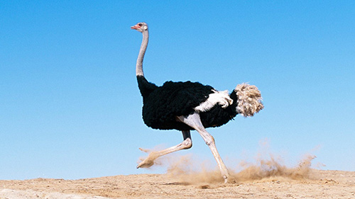

Đà Điểu

Đà điểu châu Phi (danh pháp khoa học: Struthio camelus) là một loài chim chạy, có nguồn gốc từ châu Phi. Nó là loài còn sinh tồn duy nhất của họ Struthionidae, và chi Struthio. Chúng rất khác biệt về hình thể với cổ, chân dài và có thể chạy với tốc độ lên đến 65 km/giờ (40 dặm/giờ). Đà điểu được xem là loài chim còn sống lớn nhất và được chăn nuôi trên khắp thế giới. Tên khoa học của nó bắt nguồn từ tiếng Hy Lạp có nghĩa là "chim lạc đà". Trong tên khoa học của nó phần thứ hai -camelus mang ý nghĩa liên tưởng tới môi trường sống khắc nghiệt trong tự nhiên của chúng.
Đà điểu châu Phi nặng từ 90 đến 130 kg (200 đến 290 pound). Một số đà điểu trống đã được ghi nhận là có thể nặng đến 155 kg (340 pao). Đà điểu trống trưởng thành có lông chủ yếu là màu đen với một vài điểm trắng ở cánh và đuôi. Đà điểu mái và con non có màu xám nâu nhạt với vài đốm trắng. Đà điểu trống dùng đôi cánh nhỏ do thoái hóa của nó để múa gọi bạn tình và che chở cho đà điểu con. Bộ lông của chúng mềm và khác biệt so với lông vũ của loài chim bay. Vẫn còn những cái móng trên hai cánh của chúng. Cặp chân khỏe của chúng không có lông. Chân có hai ngón với một ngón lớn hơn trông giống như móng ngựa. Điểm độc đáo này giúp cho khả năng chạy của đà điểu. Với lông mi rậm và đen, cặp mắt của đà điểu lớn nhất trong các loài động vật trên cạn còn sống.
Ở độ tuổi trưởng thành (2–4 năm), đà điểu trống cao 1,8–2,7 m (6–9 ft), đà điểu mái 1,7–2 m (5,5–6,5 ft). Trong năm đầu tiên, đà điểu con tăng cao 25 cm (10 inch) mỗi tháng. Một năm tuổi đà điểu đạt trọng lượng 45 kg (100 pao).